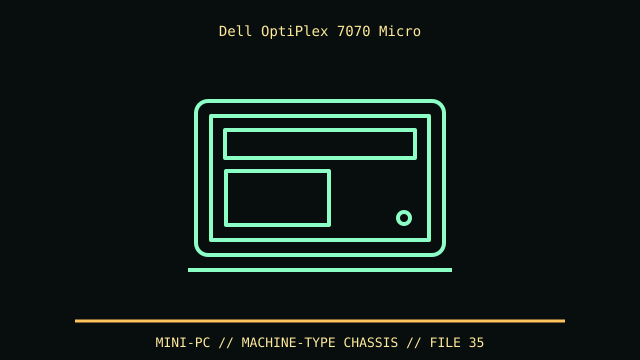

[ IDENTIFIED ENCLOSURE // OPTIPLEX 7070 MICRO FORM FACTOR (2019) ]
Dell OptiPlex 7070 Micro
182 × 178 × 36 mm (H × D × W); clearance for stand/VESA mount and DC plug is additional.

VARIANT / ARCHIVAL CAVEAT: 7070 Micro and 7070 SFF differ in board, PSU and expansion. Service tag identifies Type-C module, WLAN and storage cage. Use correct front bezel and bottom plate screws.
Mechanical specifications and fit
| Catalog identity | OptiPlex 7070 Micro Form Factor (2019) |
|---|---|
| Dimensions and clearances | 182 × 178 × 36 mm (H × D × W); clearance for stand/VESA mount and DC plug is additional. |
| Drive bays / mounts | One M.2 2230/2280 SSD plus one 2.5-inch SATA drive with the correct cage/cable; drive height per Dell assembly. |
| Board, system and compatibility | Dell proprietary Micro board, external 65/90 W adapter, optional Type-C module and VESA sleeve. It is not the OptiPlex 7070 SFF motherboard/case. |
| Revision / identification | 7070 Micro and 7070 SFF differ in board, PSU and expansion. Service tag identifies Type-C module, WLAN and storage cage. Use correct front bezel and bottom plate screws. |
Preservation and installation notes
7070 Micro and 7070 SFF differ in board, PSU and expansion. Service tag identifies Type-C module, WLAN and storage cage. Use correct front bezel and bottom plate screws.
Dell proprietary Micro board, external 65/90 W adapter, optional Type-C module and VESA sleeve. It is not the OptiPlex 7070 SFF motherboard/case.
- Capture the complete model/SKU, serial/date label, board assembly and bay/backplane/riser identifiers before disassembly; keep matched screws, trays, carriers, feet and cables with the case.
- Check the cited manual's specific build option before transferring hardware. Published maximum GPU, drive, fan or radiator capacity may not be simultaneous when a removable cage or alternative riser occupies that volume.
- For rack and vintage systems, preserve the exact rails, shields, doors, brackets and model-specific safety instructions; do not infer compatibility from a familiar brand or physical connector shape.
Manufacturer manuals and archival sources
- Dell OptiPlex 7070 Setup and SpecificationsPrimary manufacturer or model-specific technical/manual reference used for the identification and mechanical data above.
- Dell OptiPlex 7070 Micro Service ManualSecond product manual, manufacturer resource or established technical archive; choose the exact regional SKU and revision.
When exact dimensions depend on configuration, the text says so; verify the measured specimen before making a fit or restoration decision.